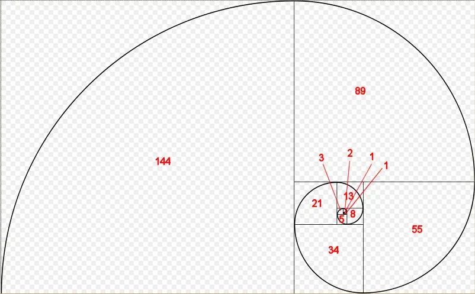

在 C++ 中，自己调用自己的函数称为递归函数。下面这个例子是一个递归函数的例子（不佳的写法）：
#include <iostream>
void countDown(int count)
{
std::cout << "push " << count << '\n';
countDown(count-1); // countDown() calls itself recursively
}
int main()
{
countDown(5);
return 0;
}当 countDown(5) 被调用时，打印了 “push 5”。然后 countDown(4) 被调用，它打印 “push 4” 并调用 countDown(3)。countDown(3) 会打印 “push 3” 并调用 countDown(2)。countDown(n) 调用的一系列 countDown(n-1)，形成的递归调用等价于一个死循环。
在 20.2 - 栈和堆 中我们学过，所有的函数调用都需要将相应的数据放在调用栈上。因为 countDown() 函数从不返回（只是不断地调用 countDown())，因此相关的函数信息从来没有被从栈上弹出过。因此，在到达某个极限时，计算机就会耗尽栈上内存，进而发生堆栈溢出，程序崩溃。在笔者的机器上，程序会在count到-11732时崩溃！
递归的终止条件#
递归函数调用的工作方式通常与普通函数调用一样。然而，上面的程序说明了递归函数最重要的区别：递归函数必须包含递归终止条件，否则它们将“永远”运行(实际上，直到调用堆栈耗尽内存)。递归终止条件——当满足该条件时，将导致递归函数停止调用自身。
递归终止条件通常涉及使用if语句。下面是我们的函数重新设计了一个终止条件(和一些额外的输出)：
#include <iostream>
void countDown(int count)
{
std::cout << "push " << count << '\n';
if (count > 1) // termination condition
countDown(count-1);
std::cout << "pop " << count << '\n';
}
int main()
{
countDown(5);
return 0;
}运行程序，countDown() 会开始打印：
push 5
push 4
push 3
push 2
push 1
如果你现在查看调用栈，你会看到以下内容：
countDown(1)
countDown(2)
countDown(3)
countDown(4)
countDown(5)
main()
由于终止条件存在，countDown(1)不调用countDown(0)——相反，” if语句”不执行，因此它打印” pop 1 “，然后终止。此时，从栈中弹出countDown(1)，控制返回countDown(2)。countDown(2)在countDown(1)被调用后继续执行，因此它打印” pop 2 “然后终止。递归函数调用随后从堆栈中弹出，直到所有的countDown实例都被删除。
因此，程序打印的完整结果如下：
push 5
push 4
push 3
push 2
push 1
pop 1
pop 2
pop 3
pop 4
pop 5
值得注意的是，“push”输出是按前向顺序发生的，因为它们发生在递归函数调用之前。“pop”输出以相反的顺序出现，因为它们出现在递归函数调用之后，因为函数从栈中弹出(其发生的顺序与放入它们的顺序相反)。
更有用的例子#
现在我们已经讨论了递归函数调用的基本机制，让我们看看另一个更典型的递归函数:
// return the sum of all the integers between 1 (inclusive) and sumto (inclusive)
// returns 0 for negative numbers
int sumTo(int sumto)
{
if (sumto <= 0)
return 0; // base case (termination condition) when user passed in an unexpected argument (0 or negative)
if (sumto == 1)
return 1; // normal base case (termination condition)
return sumTo(sumto - 1) + sumto; // recursive function call
}仅通过观察递归程序通常很难理解递归调用。当我们调用具有特定值的递归函数时，看看会发生什么通常是有指导意义的。让我们看看当我们调用这个参数为sumto = 5 的函数时会发生什么。
sumTo(5) called, 5 <= 1 is false, so we return sumTo(4) + 5.
sumTo(4) called, 4 <= 1 is false, so we return sumTo(3) + 4.
sumTo(3) called, 3 <= 1 is false, so we return sumTo(2) + 3.
sumTo(2) called, 2 <= 1 is false, so we return sumTo(1) + 2.
sumTo(1) called, 1 <= 1 is true, so we return 1. This is the termination condition.
现在我们展开调用栈(在返回时将每个函数从调用栈中弹出):
sumTo(1) returns 1.
sumTo(2) returns sumTo(1) + 2, which is 1 + 2 = 3.
sumTo(3) returns sumTo(2) + 3, which is 3 + 3 = 6.
sumTo(4) returns sumTo(3) + 4, which is 6 + 4 = 10.
sumTo(5) returns sumTo(4) + 5, which is 10 + 5 = 15.
这里可以很明显的看出，每次相加值会递增1，然后再加上传入的值。
因为单看递归函数可能很难理解，所以好的注释特别重要。
注意，在上面的例子中，我们使用了 sumto - 1 而不是 --sumto。这是因为 operator-- 是有副作用的，而在一个表达式中多次使用一个有副作用的变量会导致未定义行为。使用 sumto - 1 可以避免副作用，使得 sumto 可以安全地在一个表达式中多次使用。
递归算法#
使用递归函数解决问题的思路如下：首先找到问题子集的解(递归地)，然后修改子问题的解以得到问题的解。在上述算法中，sumTo(value)首先求解sumTo(value-1)，然后将变量value的值相加，求出sumTo(value)的解。
在许多递归算法中，一些输入会得到很简单的输出。例如，sumTo(1)的输出为1(你可以在头脑中计算)，并且没有必要再进一步递归了。这种情况称为——基本条件。基本条件通常作为算法的终止条件。通过考虑输入0、1、” ”、“或null的输出，通常可以识别为基本条件。
斐波那契数列#
最著名的数学递归算法之一是斐波那契数列。斐波那契数列出现在自然界的许多地方，如树木的分枝、贝壳的螺旋形、菠萝的果实、不卷曲的蕨类叶子和松果的排列。
这是一张斐波那契螺旋图:

每一个斐波那契数列都是该数列所在正方形的边长。
斐波那契数列在数学上定义为:
F(n) =
0 if n = 0
1 if n = 1
f(n-1) + f(n-2) if n > 1
因此，编写一个(不是很高效的)递归函数来计算第n个斐波那契数是相当简单的:
#include <iostream>
int fibonacci(int count)
{
if (count == 0)
return 0; // base case (termination condition)
if (count == 1)
return 1; // base case (termination condition)
return fibonacci(count-1) + fibonacci(count-2);
}
// And a main program to display the first 13 Fibonacci numbers
int main()
{
for (int count { 0 }; count < 13; ++count)
std:: cout << fibonacci(count) << ' ';
return 0;
}运行该程序会产生以下结果:
0 1 1 2 3 5 8 13 21 34 55 89 144
你会注意到，这正是斐波那契螺旋图中出现的数字。
记忆化算法#
上面的递归斐波那契算法不是很高效，部分原因是每次调用一个斐波那契都会导致另外两个斐波那契调用。这将产生指数级的函数调用次数(实际上，上面的示例调用fibonacci() 1205次!)有一些方法可以用来减少必要的调用次数。一种是叫做记忆化的技术，将开销很大的函数调用的结果缓存起来，以便在再次出现相同的输入时返回结果。
下面是一个记忆版的递归斐波那契算法:
#include <iostream>
#include <vector>
// h/t to potterman28wxcv for a variant of this code
int fibonacci(int count)
{
// We'll use a static std::vector to cache calculated results
static std::vector results{ 0, 1 };
// If we've already seen this count, then use the cache'd result
if (count < static_cast<int>(std::size(results)))
return results[count];
// Otherwise calculate the new result and add it
results.push_back(fibonacci(count - 1) + fibonacci(count - 2));
return results[count];
}
// And a main program to display the first 13 Fibonacci numbers
int main()
{
for (int count { 0 }; count < 13; ++count)
std::cout << fibonacci(count) << ' ';
return 0;
}这个记忆版本进行了35次函数调用，比原始算法的1205次好得多。
递归和迭代#
关于递归函数经常被问到的一个问题是，“如果可以迭代地执行许多相同的任务(使用for 循环或while循环)，为什么还要使用递归函数呢?”事实证明，你总是可以迭代地解决递归问题——然而，对于复杂的问题，递归版本的编写(和读取)通常要简单得多。例如，虽然可以迭代地编写Fibonacci函数，但这有点困难!(试一试!)
迭代函数(使用for循环或while循环的函数)几乎总是比递归函数更高效。这是因为每次调用函数时，栈帧的推入和弹出都会产生一定的开销。迭代函数避免了这种开销。
这并不是说迭代函数总是更好的选择。有时候，函数的递归实现是如此的简洁和容易遵循，以至于为了可维护性的好处，产生一点额外的开销是值得的，特别是在算法不需要多次递归来找到一个解决方案的情况下。
在满足下面条件的时候，使用递归通常是更好的选择：
- 当递归代码更容易编写时；
- 递归的深度有限(例如，实际上没办法编写十万层递归的算法）；
- 当迭代版本的算法需要手工管理栈时；
- 性能要求不高
但是，如果递归算法更容易实现，那么可以先递归地开始，然后再优化为迭代算法。